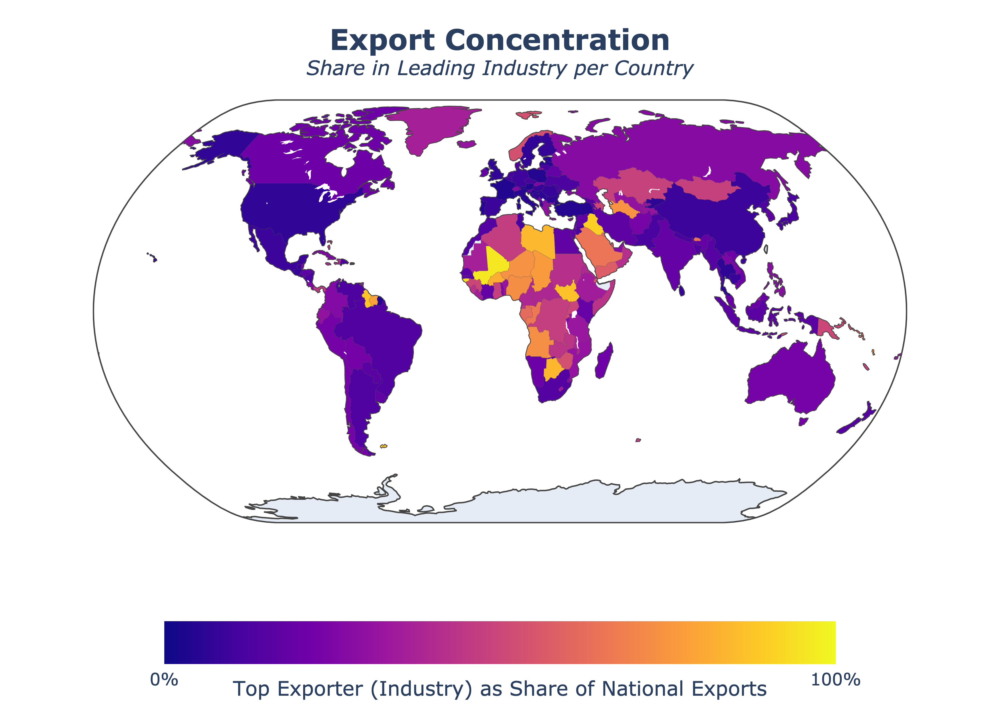
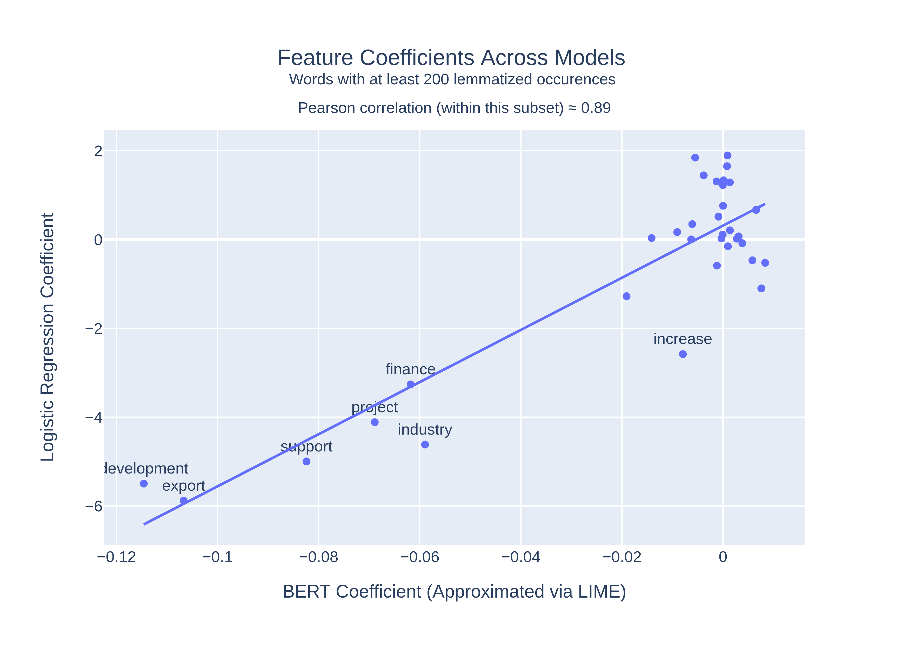
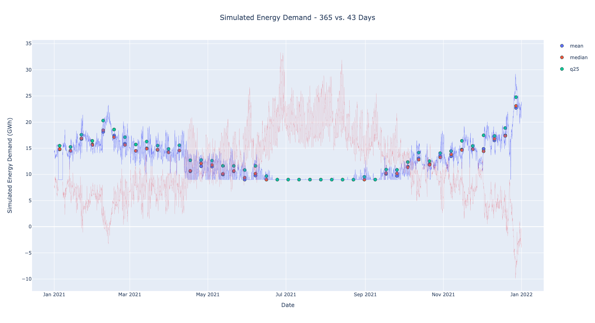

Portfolio
A collection of my projects and work
Here you'll find a selection of my projects. Click on any image to learn more about the project.





Made with ❤ with HTML, CSS, Javascript, & Bootstrap. Template from Rosacodes
×
Database Project
Led the development of a comprehensive database system that transformed proprietary data into a publicly accessible resource. This project democratized access to critical financial information.
Key features:
- Data normalization and cleaning
- API development
- Interactive front-end interface
Technologies used:
- Python
- SQL
- FastAPI
- Docker
×
Economic Analysis Project
Conducted in-depth economic analysis to understand trade patterns and industrial development. This research provided insights into economic transitions and development pathways.
Key features:
- Trade flow analysis
- Time-series modeling
- Comparative advantage assessment
Technologies used:
- R
- Econometrics
- Data visualization